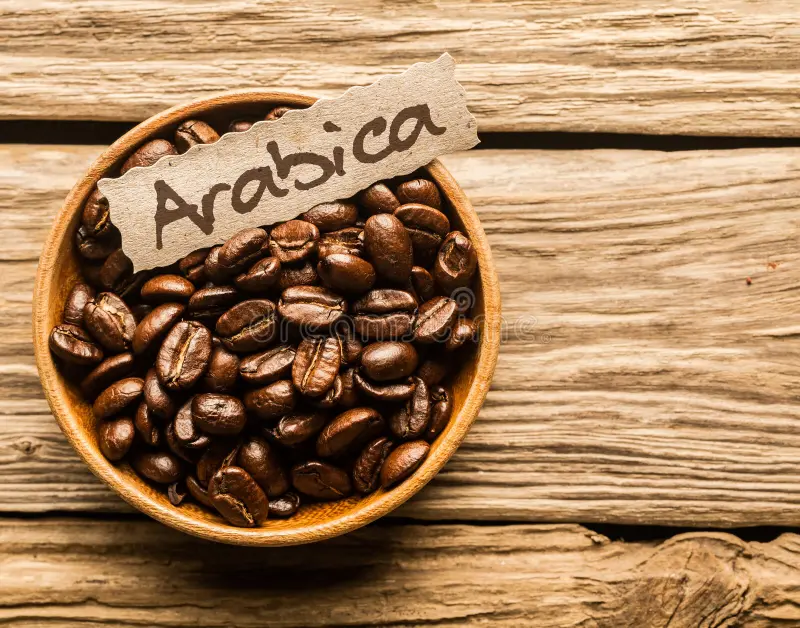
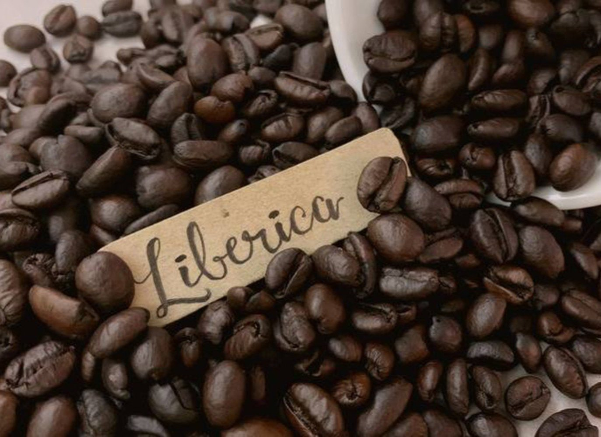
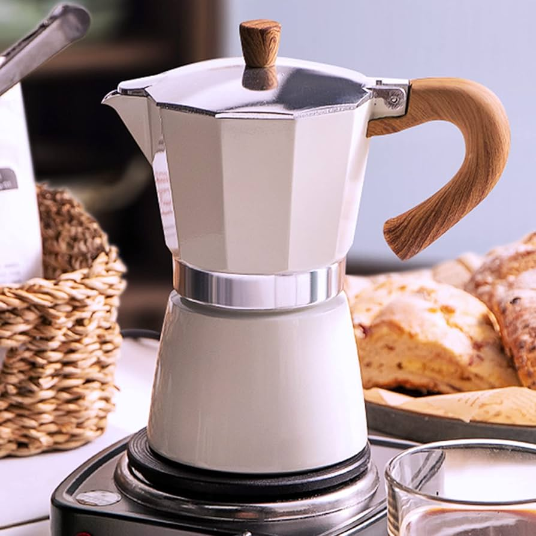
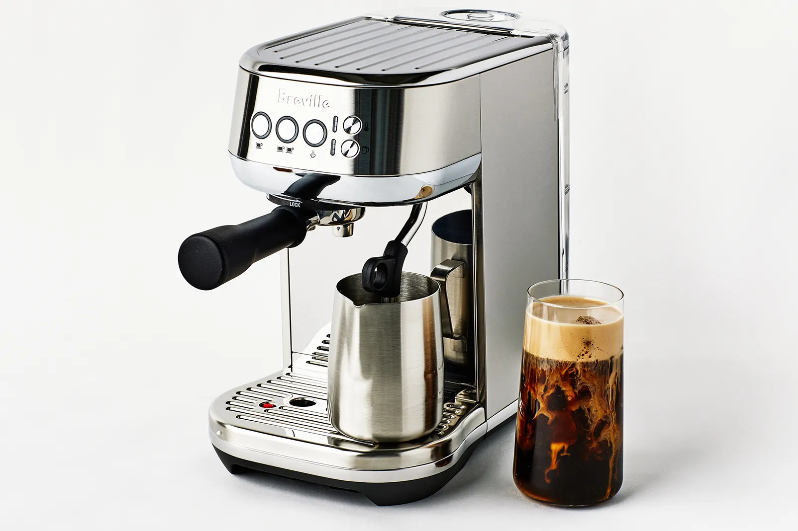
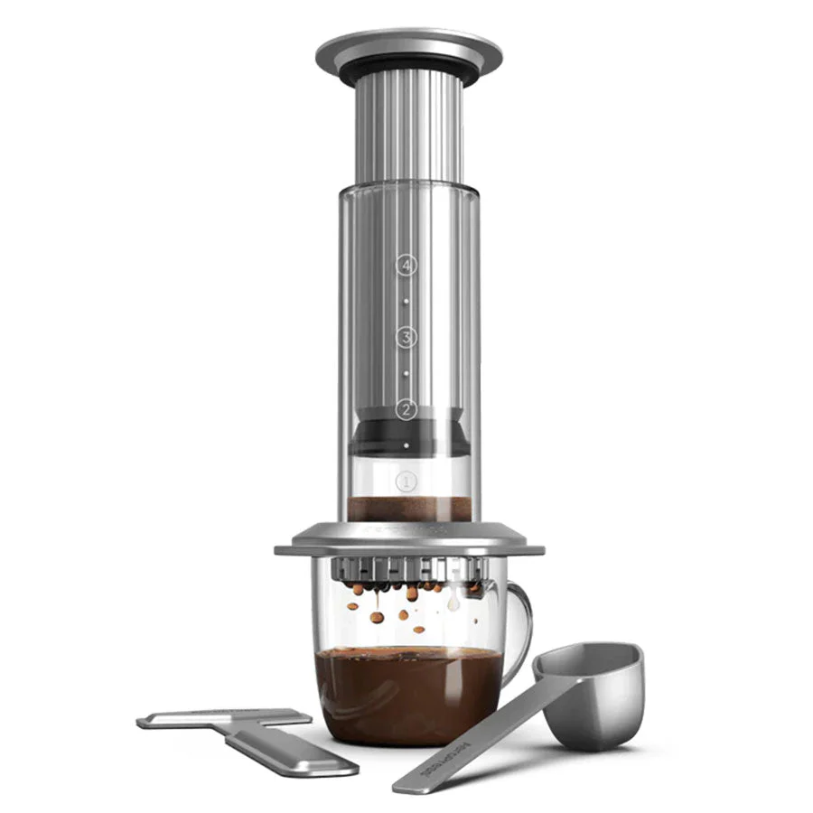
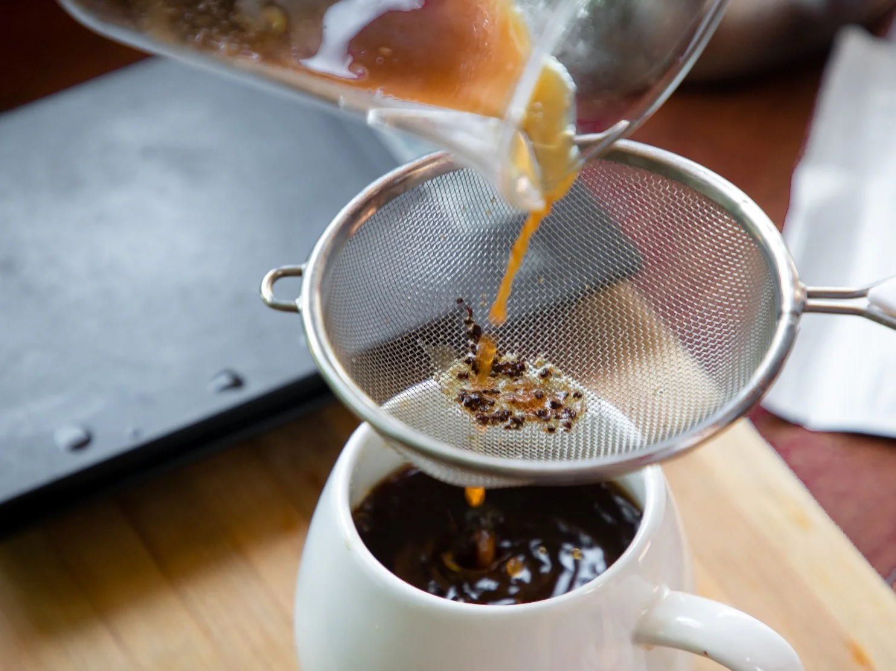

WELCOME TO COFFEE 101
Your ultimate guide for brerwing the perfect coffee.
These guides serve as a good place to start.
The grinder you use, coffee you choose, and yes, even the water from your sink, can alter the taste in the cup.
Every machine is different, so you'll want to think of these parameters more as guidelines than law.
TYPES OF COFFEE BEANS :-
Firstly let us know about the various types of coffee beans.

ARABICA
- Origin: Ethiopia (now grown mainly in Latin America, East Africa, and Asia)
- Flavor: Smooth, mild, and slightly sweet; often has fruity or floral notes
- Caffeine content: Lower (about 0.8–1.5%)
- Altitude: Grows best at high altitudes (600–2000 m)
- Characteristics:
- Most popular type — accounts for ~60–70% of global coffee production
- High-quality and aromatic
- More expensive to grow (sensitive to pests and climate)

ROBUSTA
- Origin: Sub-Saharan Africa (widely grown in Vietnam, Brazil, and Indonesia)
- Flavor: Strong, earthy, and bitter with nutty or woody undertones
- Caffeine content: Higher (1.7–3%)
- Altitude: Grows at lower altitudes (200–800 m)
- Characteristics:
- Hardier plant—resistant to pests and harsh climates
- Produces more crema (used in espresso blends)
- Cheaper and more caffeinated than Arabica

LIBERICA
- Origin: Liberia (West Africa); now found in the Philippines, Malaysia, and Indonesia
- Flavor: Unique — floral, woody, smoky, sometimes fruity
- Caffeine content: Moderate (~1.2%)
- Bean shape: Larger and asymmetrical compared to Arabica or Robusta
- Characteristics:
- Rare—less than 2% of global production
- Has a distinctive aroma, often described as “woody” or “fruity”

EXCELSA
- Origin: Central Africa; grows in Southeast Asia
- Flavor: Tart, fruity, complex with both light and dark notes
- Caffeine content: Similar to Liberica
- Adds complexity, depth, and brightness when blended with other beans.
- Characteristics:
- Used mostly in blends to add depth and complexity
- Grows on tall trees (up to 20–30 ft)
METHODS OF BREWING COFFEE :-
FRENCH PRESS :
The classic French Press is known for its ability to brew a consistent, heavy bodied black coffee.

What you’ll need:
- French Press
- 20g coffee (approximately 3 tablespoons)
- 240ml water (2 teaspoons less than 1 cup) at 94°C (1:50 minutes off the boil)
- Tablespoon
- Cup
- Kettle
Brewing recipe :
- Add 20g of coffee into your French Press.
- Pour 40ml of hot water.
- Stir 10 times to wet the ground coffee, and leave it for 30 seconds on the timer.
- Pour the remaining water.
- Add the lid and leave for 3 more minutes.
- Stir a few times until the grinds fall to the bottom.
- Then, very slowly, plunge over 1 minute.
- Serve into cups straight away to avoid over extracting the coffee.
MOKA POT :
The Moka Pot is a straightforward way of making a rich, strong brew over a stove. A Moka Pot is a compact and affordable brewer that gives you a concentrated dose of coffee, rather than an espresso replacement.
What you’ll need:
- Moka Pot
- 12g coffee (approximately 6 teaspoons) in Moka Pot grind
- 100ml water (1.5 tablespoons less than ½ cup) at 30-40°C (¾ cold water + ¼ boiling water)
- Tablespoon
- Cup
- Kettle
Brewing recipe :
- Add 100ml warm water to the lower chamber of your Moka Pot.
- Place the filter basket onto your lower chamber.
- Add 12g coffee in the filter basket.
- Screw the upper chamber and lower chamber together.
- Heat on medium until you hear a gurgling sound, or when you see the water has finished bubbling through.
- Immediately pour into your cup.
ESPRESSO:
Espressos are the foundation of a cafe, serving as the base for the cappuccinos, lattes and americanos that are commonly served. Arguably, one of the most complicated and difficult brewing methods available, changes in humidity, coffee age, roast level and water are just some of the variables that have to be accounted for to brew a good shot.
What you’ll need:
- Espresso machine
- 15g coffee (2.5 teaspoons) in espresso grind
- Cup
- Scales
Brewing recipe :
- Top up the water tank of your espresso machine.
- Place the coffee in your portafilter and gently tamp to even out the coffee grinds and create a compact bed of grinds by pushing down evenly.
- Place the portafilter into the espresso machine and turn on the machine. Brew for 35s.
COLD BREW :
Our summer favourite, cold brews are perfect for those who like to sip on smooth, chocolatey coffee with low acidity.

What you’ll need:
- Vessel (ideally 1 litre or larger).
- Filter (muslin cloth or pour over cone + filter paper will work just fine)
- 100g coffee in cold brew grind (approximately. 1 cup)
- Spoon
- 1 litre filtered water (4 cups) at room temperature
Brewing recipe :
- Place your coffee grinds into your vessel.
- Pour in half the quantity of water.
- Stir well until all the grinds are wet.
- Pour remainder of water, stir once more.
- Add lid/wrap and rest at room temperature.
- After 16 hours, strain through a filter.
- Refrigerate.
- Drink black or with milk.
POUR OVER :
Pour Overs are a great way to brew a complex and delicate cup. This is a versatile brewing equipment that allows control over all of the key variables of brewing - dose, grind, temperature and time.

What you’ll need:
- Pour Over cone
- Pour Over filter paper
- 16g coffee (approximately 2 tablespoons) in pour over grind
- 240ml water (2 teaspoons less than 1 cup) at 92°C (approximately 3:45 minutes off the boil)
- Tablespoon
- Cup
- Kettle
Brewing recipe :
- Fold seam of filter paper, place in cone and rinse with hot water over your cup.
- Discard this water, and place the cone back on the cup.
- Add 16g of coffee into your filter.
- Pour 60ml of hot water over the grinds — the bubbles you see are called the bloom.
- Stir 3 times to lightly mix the coffee grinds, and leave for 30 seconds.
- Pour 60ml of water every 30 seconds until you have poured 240ml.
- Let the brew drip through the filter.
- At 3 minutes, take the filter cone off your coffee cup. The water should have just finished dripping through.
AERO PRESS :
Portable and lightweight, the AeroPress is a great travel companion and can brew a full-bodied cup wherever you are.
What you’ll need:
- Aeropress
- Aeropress filter
- 17g coffee (approximately 8.5 teaspoons) in AeroPress grind
- 230ml water (1.5 tablespoon less than 1 cup) at 90°C (5:30 minutes off boil)
- Tablespoon
- Cup
- Kettle
Brewing recipe :
- Add 17g coffee.
- Add 80ml of 90℃ water and start a timer.
- Stir a few times to wet all the grinds and leave for 20 seconds.
- Add the remaining water and vacuum seal the AeroPress.
- After 90 seconds on the timer, press down evenly and gradually for 30-50 seconds, until you hear a hissing sound.
CHANNI :
Easy and cheap, channi coffee is great for people who are new to brewing coffee at home and don't have any equipment. All you need is a tea strainer!
What you’ll need:
- Channi / Strainer
- 14g (approximately 7 teaspoons) coffee in coarse, channi grind
- 140ml water (½ cup + 1 tablespoon) at 94°C (approximately 1:50 minutes off the boil)
- 230ml water (1.5 tablespoon less than 1 cup) at 90°C (5:30 minutes off boil)
- Tablespoon
- Cup
- Kettle
Brewing recipe :
- Add 14g coffee to your cup.
- Add 130ml hot water.
- Leave for 4 minutes.
- At 4 minutes, stir 10 times.
- Pour brew through channi into another cup.
- Add more of the remaining hot water, or milk to your preference.